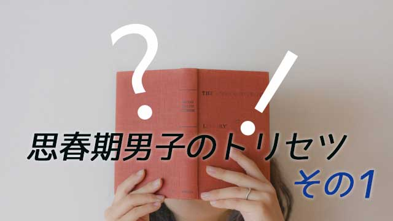

母親にとってはいつの時代でも、思春期の男の子をどう扱うべきかは悩みのタネである。
小学生くらいまでは男の子はとてもかわいい。女の子だと小学5，6年になるとすでに大人並みに発育してしまう。母親に対しても大人顔負けの堂々たる（‼）発言で、何か注意しようものなら「何よ、お母さんこそ○○じゃない！」などと論破（笑）することも珍しくない。
母親からすると痛いところを突かれ「憎たらしい」と思うこともあるだろう。
これは女同士ならではの、細かい部分に目が行くことによって互いの弱点を突つき合う愛憎劇（バトル）といえる。
その点男の子はシンプルで可愛いものである。
概して素直で言動も直線的である。母親からしたらその単純明快な姿は分かりやすく好ましい。何を考えているのかも理解できるし、コントロールすることもたやすい。そんな男の子は母親にとっては天使のような存在かも知れない。
しかしそんな「天使」も思春期になると変貌する。「男の子はコントロールしやすいわァ」と思っている母親にとってその変貌ぶりは衝撃的かも知れない。
・以前のように何でも話してくれなくなった。
・口調が乱暴になったり無愛想になる。
・部屋に閉じこもることが多くなり、何か聞いても「ああ」とか「別に」とかめんどくさそうに答える。
・反対にやたら反抗的になって「うるさいババア」などと暴言を吐いたり、妙な屁理屈を言うようになる。等々
同じようなことは女の子でも起こり得るが、思春期男子の特徴的変貌と言えるだろう。
男の子が無口になる２つの理由
何といっても「以前は何でも話してくれたのに急に話してくれなくなる」ことは母親にとって辛くもあるし、不安なことでもある。
だが不安になるのは母親が女であるからだ。
以前にも話したが（母親の知らない思春期男子）男の子は思春期になるとことば数が減るものだ。これは「大人の男」になりつつある証拠で何も心配はいらない。
女性は―女の子も含めて―言語能力が優れている。思春期になれば既に大人と同じレベルで言語を操ることができるが、男の子はそうはいかない。むしろ一時的に言語能力は衰える。その理由は後でも述べるが、思春期男子は一時的に言語障害（？）に陥っているといっても過言ではない。
言葉を交わすことで親密さを深めようとする女性にとって、会話が途絶えることは関係性の終わりを意味するような不安を感じるが、男の子にとっては「無口になる」のは普通のことだと考えて安心して欲しい。
では、どうしてことば数が減るのか。無口になるのか。急に話さなくなるのか。
これには２つの問題―器質的（脳の働きなどの）理由と心理的理由―があると思う。
器質的な面で言うと、男性は思春期になると急激に左脳優位になるからだと思う。左脳は確かに言語を扱うが、ものごとを分析したり個別具体的なものを普遍化したりする働きがある。
一方右脳は直観やイメージ情動と密接に関係している。
女性の脳は左右のバランスがとれている。女性が自分の思っていることや感情を巧みに言語化できるのはそのためだ（実際左右の脳を結ぶ脳梁は女性のほうが太い。つまり左脳と右脳の連絡が活発）
対して男性は左脳優位の傾向がある。男が一般的に自分の感情などをうまく表現できない（下手である）のもこのためだ。それより分析したり論理的に考えることのほうが得意だし、気持ちを表現するより論理的整合性のほうが大切だと感じている。
男も子どものうちは左右の脳のバランスが良いのだろう。女の子と同じくらい「おしゃべり」で感情表現もできる子が多い。
しかし大人になるにつれ男の脳はバランスが崩れだす（笑）。特に思春期は大人化が急であるため混乱が生じる。ただでさえバランスの悪い男性脳が一層バランスが悪くなるのが思春期というわけだ。
この時期の男子は個人差はあるが、様々なことを言葉化する能力それ自体が混乱し、言語能力は機能不全（？）に陥っているというに近い。
息子は「男」を目指して母から去る
だから母親が「言いたいことがあるならハッキリ言ってちょうだい」「どう感じてるわけ？」などと迫ることは、いたずらに息子を追い詰めていると言える。子ども自身どう答えてよいか分からないのだ。
母親と話すとよく「ウチの子、何考えてるのか分かりません」とか「いまの状況分かってるのかしら」と心配するが、子どもなりに色々考えているし分かってもいるが、それをうまく伝える術（言葉）を見い出せないでいるというのが真相なのだ。
もう１つ。男の子が親―特に母親―と口をきかなくなるには心理的な理由もある。実は思春期というのは後（次回）でも述べるが、男らしさを同性と競う時期でもある。男の子同士で連帯を深め仲間意識を養う一方で「男らしさ」というものを互いに切磋琢磨して鍛え上げる時期なのだ。
これは良く言えば友情を通して自分を高めたい欲求であり、悪く言えば男同士ツルんでハメをはずすなど「ワルぶりたい」欲求である。
いずれにせよこの時期の男の子は他の同性と「どちらが男らしいか」競争（優劣をつける）意識で動いている。つまり女の子にモテるより同性たちから「男として」認められることのほうが重要なのだ。同性集団に対する承認欲求である。
こんな時期には母親とベタベタする男子は「お子ちゃま」として扱われかねない。たとえば幼いころから母親を「ママ」と呼ばせていた子には悲劇（笑）が訪れる。もし万一自分の母親をうっかり「ママ」などと呼ぼうものなら大変だ。「わあ、こいつママだってよ！」とたちまち嘲笑されるかも知れない。
同性集団と競い合うことによって「男らしくあろう」としている思春期男子にとって、女性原理の体現者たる母親を遠ざけたいのは当然の心理状態といえる。
決して母親を嫌っているわけでもなく、慕っていないわけでもない。
いや、むしろ母親を好きで慕っているからこそ、母親の愛に包まれて甘える心地良さを知っているからこそ、その引力から脱したいのだ。
それが「大人の男」になること。すなわち自立することだと心のどこかで知っているのだ。
思春期男子が母親と口をきかなくなったり暴言を吐く行為の背景にはこのような事情があると知ってみれば、それほど心配することはないのだということが分かるだろう。
この時期の男の子は肉体面、精神面共に大人になるための配線の組み替えが行われていると考えてみればよい。
そうすれば様々な「心配な言動」も組み替え作業中に起きる誤作動（笑）の一種と思える。
ただ、母親は女性であるが故に男の子に特有の心理的肉体的傾向に理解が及ばず、ついやってはいけないことをやってしまいがちだ。先の「言葉で追い詰める」もそうだし、男性集団からの承認欲求への無理解もそうだ。
そこで次回は思春期男子の「踏み込まれたくない領域」について述べながら、母親の正しいあり方について書いてみたい。